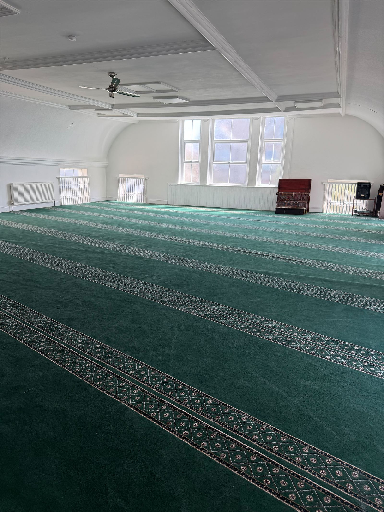

بِسْمِ اللَّهِ الرَّحْمَٰنِ الرَّحِيمِ
Welcome to Canolfan Iman Centre
Croeso — welcome. We are the mosque and Islamic centre serving Llandudno Junction and the wider North Wales community: a warm, open place for worship, learning, and support, for Muslims and neighbours of all faiths.

A spiritual home for North Wales
Canolfan Iman Centre — also known as Llandudno Junction Mosque — has grown into a place where the local Muslim community gathers for prayer, learning, and fellowship, and where our wider neighbours in Conwy and North Wales are always welcome to visit, ask questions, and connect.
Our mission is simple: to serve our community through faith, education, compassion, and inclusion.
More About UsOur Prayer Hall

Help Us Serve North Wales
Every prayer hosted, class taught, and family supported is made possible by your generosity. Your Sadaqah and Zakat keep our doors open to everyone.
Donate Now